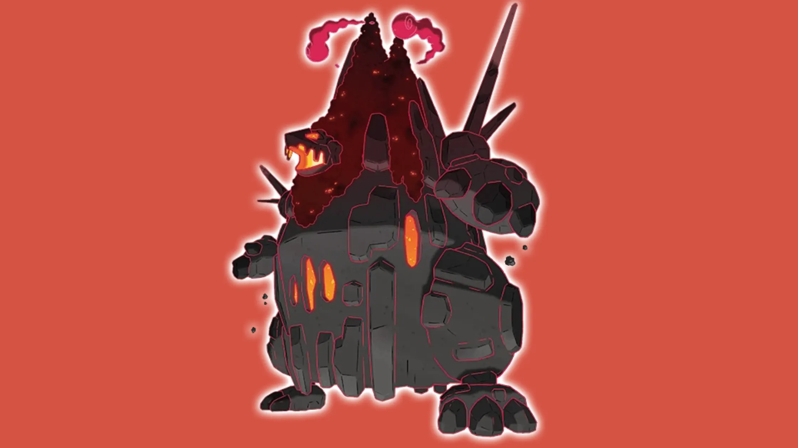

<!--<!doctype html>
<html lang="en">
<head>
  <meta charset="utf-8" />
  <title>Gigantamax Coalossal Raid Guide — Counters, Teams & Expert Strategy | Pokémon Gaming</title>
  <meta name="viewport" content="width=device-width, initial-scale=1" />
  <meta name="description" content="Gigantamax Coalossal raid guide for Pokémon GO — weaknesses, top counters, best teams, moveset mapping, weather strategy, IV & CP guidance, and expert step-by-step tactics to beat Gigantamax Coalossal reliably." />
  <link rel="canonical" href="https://pokemongaming.in/gigantamax-coalossal-raid-guide.html" />
  <style>
    /* Minimal in-article styles — integrate with your theme */
    body { font-family: Inter, system-ui, -apple-system, "Segoe UI", Roboto, Arial; color:#1f2937; line-height:1.65; padding:20px; max-width:980px; margin:0 auto; background:#fff; }
    header h1 { font-size:1.9rem; margin-bottom:6px; }
    .lead { font-size:1.05rem; margin-bottom:1rem; color:#111827; }
    .small { font-size:0.92rem; color:#6b7280; }
    nav.toc { background:#f8fafc; border:1px solid #e6eef6; padding:12px; margin:14px 0; border-radius:8px; }
    nav.toc h2 { margin:0 0 8px 0; font-size:1.05rem; }
    nav.toc ul { margin:0; padding-left:18px; }
    section { margin-top:1.25rem; }
    h2 { font-size:1.25rem; margin-bottom:8px; color:#0f172a; }
    h3 { font-size:1.03rem; margin-bottom:6px; color:#0f172a; }
    table { border-collapse:collapse; width:100%; margin:10px 0 14px; }
    th, td { border:1px solid #e6eef6; padding:10px 12px; text-align:left; vertical-align:top; }
    th { background:#f1f5f9; font-weight:700; color:#0f172a; }
    .note { background:#fff7ed; padding:10px; border-left:4px solid #f59e0b; margin:12px 0; border-radius:4px; }
    .pro-tip { background:#ecfeff; padding:10px; border-left:4px solid #06b6d4; margin:12px 0; border-radius:4px; }
    ol, ul { margin-left:1.1rem; }
    .author-box { border-top:1px solid #e6eef6; padding-top:12px; margin-top:22px; display:flex; gap:12px; align-items:center; }
    .author-box img { width:56px; height:56px; border-radius:50%; object-fit:cover; }
    .cta { display:inline-block; padding:8px 12px; background:#047857; color:white; border-radius:6px; text-decoration:none; }
    .faq q { font-style:italic; }
    pre.code { background:#f8fafc; padding:12px; overflow:auto; border-radius:6px; }
    .muted { color:#6b7280; font-size:0.95rem; }
    @media (max-width:700px) { body { padding:14px; } }
  </style>
</head>
<body>
<article>
  <header>
    <h1>Gigantamax Coalossal Raid Guide — Counters, Teams & Expert Strategy</h1>
    <p class="lead">Gigantamax Coalossal brings subterranean heat and rock-solid defense into a raid scenario — a tanky Rock/Fire boss that can chew through time and Premier Balls if you bring the wrong counters. This guide is an expert-level, practical manual: weaknesses, ranked counters, moveset mapping, weather/mega considerations, party builds for elite and budget players, IV/CP guidance, and step-by-step tactics to shorten clears and reduce revives.</p>
    <p class="small">Last updated: <strong>October 28, 2025</strong> — Written in US English for Pokémon GO raiders.</p>
  </header>

  <nav class="toc" aria-label="Table of contents">
    <h2>Table of Contents</h2>
    <ul>
      <li><a href="#overview">Gigantamax Coalossal — Quick Overview</a></li>
      <li><a href="#weaknesses">Weaknesses & Resistances</a></li>
      <li><a href="#best-counters">Best Counters (Ranked)</a></li>
      <li><a href="#moveset-mapping">Moveset Mapping & Recommended Counters</a></li>
      <li><a href="#players-needed">Players Required & Party Types</a></li>
      <li><a href="#sample-teams">Sample Party Builds</a></li>
      <li><a href="#strategy">Battle Strategy — Step by Step</a></li>
      <li><a href="#iv-cp">IV / CP & Powering Advice</a></li>
      <li><a href="#weather">Weather & Mega Notes</a></li>
      <li><a href="#catch">Raid Rewards, Catch Tips & Post-raid Uses</a></li>
      <li><a href="#related">Related Guides</a></li>
      <li><a href="#faq">FAQ</a></li>
    </ul>
  </nav>

  <section id="overview">
    <h2>Gigantamax Coalossal — Quick Overview</h2>
    <p>Coalossal in Gigantamax form turns Rock and Fire into a volcanic wall of HP. In game terms, think of a Coalossal with enlarged stamina and slightly boosted damage — fights become endurance tests. Coalossal's core identity is <strong>Rock / Fire</strong>, which makes it vulnerable to Water, Ground, and Fighting (Water and Ground are primary). Rock-type moves and Fire STAB make it dangerous: it can hit hard with moves that exploit common resistances for many raid counters. Your priorities are: sustain heavy Water/Ground DPS, avoid bringing Fire/Rock attackers, and manage shields to protect your top DPS.</p>

    <p class="pro-tip"><strong>Pro tip:</strong> Gigantamax HP pools reward endurance and energy efficiency. Fast-move energy per second and high-charge move value matters more than pure one-off burst in these fights.</p>
  </section>

  <section id="weaknesses">
    <h2>Weaknesses & Resistances</h2>
    <p>Coalossal's typing gives a clear set of primary targets. Use the table to quickly decide what to bring.</p>

    <table aria-label="Coalossal weakness chart">
      <thead>
        <tr><th>Type</th><th>Effect vs Coalossal</th></tr>
      </thead>
      <tbody>
        <tr><td>Water</td><td>Super effective (×1.6) — top reliable counter type.</td></tr>
        <tr><td>Ground</td><td>Super effective (×1.6) — excellent coverage vs Rock + Fire.</td></tr>
        <tr><td>Fighting</td><td>Super effective (×1.6) — good if you lack Water/Ground.</td></tr>
        <tr><td>Rock</td><td>Resisted — avoid Rock attackers.</td></tr>
        <tr><td>Fire</td><td>Resisted — avoid Fire attackers.</td></tr>
        <tr><td>Grass, Bug, Ice</td><td>Neutral — not ideal choices.</td></tr>
      </tbody>
    </table>

    <p class="note">Note: Water and Ground are your safest bets; Fighting is a viable secondary, especially with high bulk fighters (Conkeldurr) if you need to manage energy windows and tanking.</p>
  </section>

  <section id="best-counters">
    <h2>Gigantamax Coalossal — Best Counters (Ranked)</h2>
    <p>This ranked list focuses on realistic availability and raid performance at high level. I weight legendary and community-day moves higher but include accessible budget options too.</p>

    <table aria-label="Best counters list">
      <thead>
        <tr><th>Rank</th><th>Pokémon</th><th>Moveset</th><th>Role</th></tr>
      </thead>
      <tbody>
        <tr><td>1</td><td>Kyogre</td><td>Waterfall / Origin Pulse or Hydro Pump</td><td>Top Water DPS & bulk — tears through Coalossal's HP.</td></tr>
        <tr><td>2</td><td>Primal Kyogre</td><td>Waterfall / Origin Pulse</td><td>If you have it, superior sustained water damage.</td></tr>
        <tr><td>3</td><td>Groudon (Mud Shot / Precipice Blades)</td><td>Mud Shot / Precipice Blades</td><td>Top Ground DPS, great pocket coverage when Earth moves appear.</td></tr>
        <tr><td>4</td><td>Swampert</td><td>Mud Shot / Hydro Cannon</td><td>Accessible, versatile Ground/Water with Hydro Cannon as a huge asset.</td></tr>
        <tr><td>5</td><td>Garchomp</td><td>Mud Shot / Earth Power or Outrage</td><td>Fast Ground with good survivability.</td></tr>
        <tr><td>6</td><td>Rhyperior</td><td>Smack Down / Earthquake</td><td>Bulky Ground option for long fights.</td></tr>
        <tr><td>7</td><td>Excadrill</td><td>Mud-Slap / Drill Run</td><td>Fast Ground spammers — energy efficient.</td></tr>
        <tr><td>8</td><td>Conkeldurr</td><td>Counter / Dynamic Punch</td><td>Fighting option — bulk + good sustained DPS when Ground not available.</td></tr>
        <tr><td>9</td><td>Tapu Fini</td><td>Bubble / Surf</td><td>Water option with bulk for mixed movesets.</td></tr>
        <tr><td>10</td><td>Walrein / Mantine</td><td>Icy Wind / Surf</td><td>Utility water picks for mixed groups; accessible.</td></tr>
      </tbody>
    </table>

    <p class="small">If you lack legendaries, prioritize powering Swampert (Hydro Cannon) and Excadrill for their combination of availability and damage-per-stardust value.</p>
  </section>

  <section id="moveset-mapping">
    <h2>Moveset Mapping & Recommended Counters</h2>
    <p>Coalossal can appear with a few charged-move combinations. Use this table to match counters to the preview.</p>

    <table aria-label="moveset mapping">
      <thead>
        <tr><th>Coalossal Charged Moves (Example)</th><th>Primary Counter Type</th><th>Recommended Pokémon</th></tr>
      </thead>
      <tbody>
        <tr><td>Heat Crash / Stone Edge</td><td>Water / Ground</td><td>Kyogre, Swampert, Groudon</td></tr>
        <tr><td>Flamethrower / Rock Slide</td><td>Water</td><td>Kyogre, Gyarados, Tapu Fini</td></tr>
        <tr><td>Heavy Slam / Earthquake (event)</td><td>Ground / Water</td><td>Garchomp, Rhyperior, Swampert</td></tr>
        <tr><td>Ancient Power / Overheat (rare)</td><td>Water / Ground</td><td>Kyogre, Groudon, Swampert</td></tr>
      </tbody>
    </table>

    <p class="note">If you see Rock Slide or Stone Edge in the preview, prioritize Rock counters only to the extent you can — usually Water/Ground still outpace Rock attackers against this boss because Coalossal resists Rock.</p>
  </section>

  <section id="players-needed">
    <h2>How Many Players Are Needed? — Expert Estimates</h2>
    <table aria-label="players-needed">
      <thead>
        <tr><th>Team Quality</th><th>Players Required (Approx.)</th><th>Notes</th></tr>
      </thead>
      <tbody>
        <tr><td>Top meta (Kyogre + Groudon + Hydro Cannon Swampert)</td><td>2–3</td><td>With weather and perfect moves, a duo or trio clear is possible.</td></tr>
        <tr><td>Strong local groups</td><td>3–5</td><td>Most realistic scenario for dedicated players.</td></tr>
        <tr><td>Mixed/casual</td><td>6–9</td><td>Bring correct counters and avoid stacking resistances.</td></tr>
      </tbody>
    </table>

    <p class="pro-tip">Weather and Mega support can change these numbers dramatically. Two players with Kyogre + Mega that boosts Water damage in Rain can finish faster than an uncoordinated six-player group.</p>
  </section>

  <section id="sample-teams">
    <h2>Sample Party Builds — Elite, Balanced & Budget</h2>

    <h3>Elite (2–3 players)</h3>
    <ol>
      <li>Kyogre (Waterfall / Origin Pulse)</li>
      <li>Groudon (Mud Shot / Precipice Blades)</li>
      <li>Swampert (Mud Shot / Hydro Cannon)</li>
    </ol>

    <h3>Balanced (3–5 players)</h3>
    <ol>
      <li>Kyogre</li>
      <li>Garchomp</li>
      <li>Rhyperior</li>
      <li>Tapu Fini or Gyarados</li>
      <li>Excadrill</li>
    </ol>

    <h3>Budget / F2P (6–9 players)</h3>
    <ol>
      <li>Several Swampert (Hydro Cannon if possible)</li>
      <li>Excadrill</li>
      <li>Rhyperior or Rampardos</li>
      <li>High-CP Gyarados / Walrein</li>
      <li>Conkeldurr for emergency tanking</li>
    </ol>

    <p class="small">Tip: In budget groups, one or two high-level Hydro Cannon Swampert(s) will often carry the raid; protect them with shields and rotate bulky Rhyperior swaps to absorb Earth/Rock hits.</p>
  </section>

  <section id="strategy">
    <h2>Battle Strategy — Step by Step (Expert)</h2>
    <ol>
      <li><strong>Pre-raid:</strong> Check the charged-move preview. Decide whether your team will lean Water or Ground. Assign a lead and a backup tank ahead of time.</li>
      <li><strong>Lead selection:</strong> If preview shows heavy Rock/Fire moves (Stone Edge / Heat Crash), lead with your best Water attacker to get early energy and pressure.</li>
      <li><strong>Shield management:</strong> In small groups, save one shield for the late nuke. In larger groups, shields can be used more freely but don’t waste both on a single raid slot.</li>
      <li><strong>Swap & tank timing:</strong> Rotate in a bulky Ground or Water that can take a predicted hit (Rhyperior or Tapu Fini) and then swap back to a high DPS to exploit the energy window.</li>
      <li><strong>Use charge moves smartly:</strong> Don’t overspend charge moves into shields. Bait shields with medium charges and then blow windows with big hits (Origin Pulse, Precipice Blades).</li>
      <li><strong>Revives:</strong> Stagger revives — wait for a safe window so your returning trainers don’t immediately eat a charged move and faint again.</li>
    </ol>

    <p class="pro-tip">If Coalossal has Earthquake or heavy physical Rock moves in an event variant, you can temporarily favor Ground tanks (Garchomp/Excadrill) to soak damage and preserve DPS slot longevity.</p>
  </section>

  <section id="iv-cp">
    <h2>IV / CP & Powering Advice</h2>
    <p>For raid counters, prioritize moveset and level over perfect IVs. High CP with correct movesets yields the best raid performance. Recommended CP targets at Level 40:</p>

    <table aria-label="iv cp table">
      <thead>
        <tr><th>Pokémon</th><th>Target CP (L40)</th><th>Why</th></tr>
      </thead>
      <tbody>
        <tr><td>Kyogre</td><td>~3500+</td><td>Top Water attacker — bulk + DPS.</td></tr>
        <tr><td>Groudon</td><td>~3300+</td><td>Ground STAB with Precipice Blades critical.</td></tr>
        <tr><td>Swampert</td><td>~2700+</td><td>Hydro Cannon massively improves DPS for low resource investment.</td></tr>
        <tr><td>Excadrill</td><td>~2600+</td><td>Fast Ground; good energy generation.</td></tr>
      </tbody>
    </table>

    <p class="note">Candy XL: only spend XL on counters you will use repeatedly at raid-level. For most players, powering one Hydro Cannon Swampert and one Kyogre is better use of XL than many smaller investments.</p>
  </section>

  <section id="weather">
    <h2>Weather & Mega Notes</h2>
    <ul>
      <li><strong>Rain:</strong> Boosts Water — best for Kyogre/Swampert teams, reduces player count drastically.</li>
      <li><strong>Sunny/Clear:</strong> Boosts Fire — makes Coalossal slightly tankier offensively; avoid unless you plan Water counters.</li>
      <li><strong>Windy:</strong> Neutral — not directly helpful.</li>
      <li><strong>Megas:</strong> Mega Swampert (if available) or Mega Ampharos (for niche Electric coverage) can help — prefer Megas that boost Water/Ground throughput.</li>
    </ul>

    <p class="small">Expert note: coordinate with your raid group on weather windows (e.g., wait for Rain if you have two Kyogre) — a short wait often saves countless revives and Premier Balls.</p>
  </section>

  <section id="catch">
    <h2>Raid Rewards, Catch Tips & Post-raid Uses</h2>
    <p>Gigantamax raids yield the usual rewards: rare candy, TMs, stardust, and a high-CP catch. Use Golden Razz and curveballs for best catch probability. Save Premier Balls early and maximize throws when coin/opponent health is low.</p>

    <table aria-label="catch cp table">
      <thead>
        <tr><th>Trainer Level</th><th>Estimated Catch CP (Unboosted)</th></tr>
      </thead>
      <tbody>
        <tr><td>20</td><td>~1600–1900</td></tr>
        <tr><td>30</td><td>~2200–2700</td></tr>
        <tr><td>40+</td><td>~2800–3400</td></tr>
      </tbody>
    </table>

    <p class="small">Post-raid: Coalossal has niche PvP usages (rarely top-tier) but shines in themed raid events and collections. Keep perfect IVs for collectors and powering if you enjoy using Coalossal in raids or PvE niche scenarios.</p>
  </section>

  <section id="related">
    <h2>Related Guides</h2>
    <ul>
      <li><a href="/gigantamax-venusaur-raid-guide.html">Gigantamax Venusaur Raid Guide</a></li>
      <li><a href="/gigantamax-pikachu-raid-guide.html">Gigantamax Pikachu Raid Guide</a></li>
      <li><a href="/gigantamax-orbeetle-raid-guide.html">Gigantamax Orbeetle Raid Guide</a></li>
      <li><a href="/gigantamax-corviknight-raid-guide.html">Gigantamax Corviknight Raid Guide</a></li>
    </ul>
  </section>

  <section id="faq">
    <h2>Frequently Asked Questions (FAQ)</h2>
    <div class="faq">
      <h3>Q: <q>What’s the single best counter to Gigantamax Coalossal?</q></h3>
      <p>A: Kyogre (Waterfall / Origin Pulse or Hydro Pump) is the top overall counter due to high Water DPS and bulk. Hydro Cannon Swampert is an excellent budget alternative.</p>

      <h3>Q: <q>Can I solo Gigantamax Coalossal?</q></h3>
      <p>A: Soloing a Gigantamax boss is extremely difficult due to its HP pool. Only the most optimized players with multiple maxed legendaries and perfect weather boosts might attempt it. Realistic clears are teams of 2–5 depending on roster.</p>

      <h3>Q: <q>Should I TM into Hydro Cannon for Swampert?</q></h3>
      <p>A: Yes — Hydro Cannon transforms Swampert into a raid workhorse and is arguably the best single TM investment for many mid-tier and budget raiders.</p>

      <h3>Q: <q>What weather should I wait for?</q></h3>
      <p>A: Rain is ideal for Water teams; Partly Cloudy is not particularly relevant for Coalossal. Avoid Sunny/Clear unless you plan to use Ground counters that benefit indirectly.</p>

      <h3>Q: <q>Which Pokémon should I prioritize powering?</q></h3>
      <p>A: Prioritize Kyogre, Swampert (Hydro Cannon), and a strong Groudon or Garchomp depending on whether you favor Water or Ground strategies. Use Candy XL sparingly and only for repeated raid use.</p>
    </div>
  </section>

  <footer class="muted">
    <div class="author-box">
      <div>
        <strong>Written by Abhishek</strong>
        <p class="small">Pokémon GO Trainer & Guide Writer. I test team compositions in real raids and update guides to reflect current raid mechanics and community strategies.</p>
        <p class="small"><a class="cta" href="/guides.html">See all guides</a></p>
      </div>
    </div>

    <p class="small" style="margin-top:12px;">Disclaimer: Pokémon, Pokémon GO and related trademarks are the property of Nintendo / The Pokémon Company. This guide is fan-created and not affiliated with the official owners.</p>
  </footer>

  <!-- FAQ schema (JSON-LD) -->
  <script type="application/ld+json">
  {
    "@context": "https://schema.org",
    "@type": "FAQPage",
    "mainEntity": [
      {
        "@type": "Question",
        "name": "What’s the single best counter to Gigantamax Coalossal?",
        "acceptedAnswer": {
          "@type": "Answer",
          "text": "Kyogre (Waterfall / Origin Pulse or Hydro Pump) is the top overall counter due to high Water DPS and bulk. Hydro Cannon Swampert is an excellent budget alternative."
        }
      },
      {
        "@type": "Question",
        "name": "Can I solo Gigantamax Coalossal?",
        "acceptedAnswer": {
          "@type": "Answer",
          "text": "Soloing a Gigantamax boss is extremely difficult due to its HP pool. Only the most optimized players with multiple maxed legendaries and perfect weather boosts might attempt it."
        }
      },
      {
        "@type": "Question",
        "name": "Should I TM into Hydro Cannon for Swampert?",
        "acceptedAnswer": {
          "@type": "Answer",
          "text": "Yes — Hydro Cannon transforms Swampert into a raid workhorse and is arguably the best single TM investment for many mid-tier and budget raiders."
        }
      }
    ]
  }
  </script>
</article>
</body>
</html>
-->

<!DOCTYPE html>
<html lang="en">
<head>
  <meta charset="utf-8" />
  <title>Gigantamax Coalossal Raid Guide — Counters, Moves & Strategy | Pokémon GO</title>
  <meta name="viewport" content="width=device-width,initial-scale=1" />
  <meta name="description" content="Complete Gigantamax Coalossal raid guide for Pokémon GO — weaknesses, best Gigantamax & Dynamax counters, movesets, weather tips, recommended lobby sizes, rewards and battle strategy." />
  <meta name="robots" content="index, follow" />
  <link rel="stylesheet" href="posts.css"/>

<meta property="og:title" content="Gigantamax Coalossal Raid Guide — Counters, Moves & Strategy">
  <meta property="og:description" content="Defeat Gigantamax Coalossal in Pokémon GO raids: learn its weaknesses, best Gigantamax and Dynamax counters, moveset warnings, weather interactions, and catch tips.">
  <meta property="og:type" content="article">
  <meta property="og:url" content="https://pokemongaming.in/raids/gigantamax_coalossal.html">
  <meta property="og:image" content="https://pokemongaming.in/raids/images/gigantamax_coalossal_cover.webp">

</head>
<body>
 
    <section class="hero" aria-labelledby="hero-h">

<header>
  <h1>Gigantamax Coalossal — Raid Guide</h1>
</header>


      
    </section>

<main>
    <section class="intro">
      <p>Gigantamax Garbodor is one of the most unique and surprisingly strong Pokémon in both Pokémon GO and Pokémon Sword & Shield. Its massive heap of junk hides dangerous toxins and discarded objects, turning its trash pile into a weaponized fortress. With its exclusive <strong>G-Max Malodor</strong> move, this Garbage Pokémon can spread poison across the battlefield while dealing solid damage.</p>
      <p>This guide will cover everything from its weaknesses and counters to movesets and strategies for defeating Gigantamax Garbodor efficiently.</p>
    </section>


<section class="toc">
      <h3>Table of Contents</h3>
      <a href="#overview">Overview</a>
      <a href="#weakness">Weakness</a>
      <a href="#counters">Best Pokemon</a>
      <a href="#gigantamax">Best Gigantamax Counters</a>
      <a href="#dynamax">Dynamax & Support Picks</a>
      <a href="#moveset">Moveset</a>
      <a href="#weather">Weather Effects & Battle Flow</a>
      <a href="#size">Size</a>
      <a href="#rewards">Rewards</a>
      <a href="#avoid">Avoid</a>
      <a href="#faq">FAQs</a>
      <a href="#conclusion">Conclusion</a>
    </section>


    <div class="grid" style="margin-top:14px">
      <article class="card" id="guide">
        <h2>Quick summary</h2>
        <div class="kvs" aria-hidden="false">
<div><strong>Species:</strong> Coalossal (Gigantamax)</div>
          <div><strong>Type:</strong> Rock / Fire </div>
          <div><strong>Primary weaknesses:</strong> Ground, Water, Fighting, Rock</div>
          <div><strong>Recommended lobby:</strong> 15-20 trainers</div>
                 </div>
<hr style="border: 0; height: 2px; background-color: red; margin: 20px 0;">


        <section id="overview">
        <!--<p class="note">-->
      <h2>Overview</h2>
      <p>Gigantamax Coalossal is a Rock and Fire-type raid boss featured during limited-time Gigantamax events in Pokémon GO. Its massive, fiery body makes it a tough opponent, but it comes with clear weaknesses that trainers can exploit. Coalossal is weak to Ground, Rock, Fighting, and Water moves, making it vulnerable to many strong raid attackers. This guide explains everything trainers need to beat Gigantamax Coalossal reliably in Pokémon GO raids — from weaknesses and recommended Gigantamax counters to Dynamax picks, weather interactions, team-size guidance, and catch/reward tips.

     </p>
<hr style="border: 0; height: 2px; background-color: red; margin: 20px 0;">


        <section id="weakness">
 <h2>Weakness & Typing</h2>

        <div class="tbl" aria-label="Weaknesses table">
          <table>
            <thead><tr><th>Category</th><th>Details</th></tr></thead>
            <tbody>
              <tr>
                <td><strong>Weak to</strong></td>
                <td>
                   Ground •
                   Water •
  Fighting •
                   Rock
                </td>
              </tr>
              <tr>
                <td><strong>Resists</strong></td>
                <td>
                   Normal •
                   Ice •
                   Poison •
                   Flying •
                   Bug •
                   Fairy •
                   Fire
</td>
              </tr>
              <tr>
                <td><strong>Notes</strong></td>
                <td>Gigantamax bosses often use Max Moves — these can be powerful, sometimes buffing or changing battlefield conditions. Expect higher HP and potentially team-wide effects.</td>
              </tr>
            </tbody>
          </table>
<hr style="border: 0; height: 2px; background-color: red; margin: 20px 0;">

        </div>

     <section id="counters">
<h2>Best Pokemon</h2>

  <h3>Gigantamax-type Counters</h3>
  <ul>
    <li><strong>Snorlax</strong> </li>
    <li><strong>Inteleon</strong> </li>
 <li><strong>Machamp</strong> </li>

  </ul>

  <h3>Dynamax-type Counters</h3>
  <ul>
    <li><strong>Omastar</strong> </li>
    <li><strong>Kabutops</strong></li>
    <li><strong>Metagross</strong> </li>
    <li><strong>Wailord</strong> </li>
    <li><strong>Latios</strong> </li>
    <li><strong>Latias</strong> </li>
  </ul>

<hr style="border: 0; height: 2px; background-color: red; margin: 20px 0;">

<section id="gigantamax">

<h2>Best Gigantamax Counters</h2>
      <p>Gigantamax Pokémon that amplify the right types give you a powerful edge. Below are top Gigantamax counters with short notes on why they excel vs G-Max Coalossal.</p>


         <div class="tbl" aria-label="Gigantamax Counters table">
          <table>
            <thead>
              <tr>
                <th>Pokémon</th>
                <th>Fast Moves</th>
                <th>Gigantamax Moves</th>
                <th>Charged Moves</th>
                <th>Elite Moves</th>
                <th>Best Moves</th>
              </tr>
            </thead>
            <tbody>

<tr>
              <td>
              <!--<div class="poke-cell">
              <strong>-->Gigantamax Blastoise<!--</strong></div>-->
              </td>
              <td>Bite, Water Gun, Rollout</td>
              <td>G-Max Cannonade</td>
              <td>Flash Cannon, Ice Beam, Hydro Pump, Skull Bash</td>
<td>Hydro Cannon</td>
<td>Rollout(15) and G-Max Cannonade(350)</td>
            </tr>

  <tr>
              <td>
               <!--<div class="poke-cell">
                  <strong>--> Gigantamax Snorlax <!--</strong></div>-->

                </td>
                <td>Lick, Zen Headbutt</td>
                <td>G-Max Replenish</td>
                <td>Heavy Slam, Earthquake, Hyper Beam, Outrage, Skull Bash, Body Slam, Superpower</td>
<td>Yawn</td>
                <td>Zen Headbutt(11) and G-Max Replenish(350)</td>
              </tr>


<tr>
                <td>
                <!--<div class="poke-cell"><strong>-->Gigantamax Machamp<!--</strong></div>--></td>
               
                <td>Bullet Punch, Counter</td>
                <td>G-Max Chi Strike</td>
                <td>Cross Chop, Rock Slide, Close Combat, Dynamic Punch, Heavy Slam</td>
<td>Payback, Submission, Stone Edge, Karate Chop</td>
<td>Counter(13) and G-Max Chi Strike(350)</td>

              </tr>

 <tr>
              <td>
                <!--<div class="poke-cell">
                  <strong>--> Gigantamax Inteleon <!--</strong></div>-->

                </td>
                <td>Pound, Water Gun</td>
                <td>G-Max Hydrosnipe</td>
                <td>Shadow Ball, Water Pulse, Surf</td>
<td>-</td>
                <td>Pound(6) and G-Max Hydrosnipe(350)</td>
              </tr>

             <tr>
              <td>
               <!--<div class="poke-cell">
                <strong>--> Gigantamax Kingler<!--</strong></div>-->

                </td>
                <td>Metal Claw, Bubble</td>
                <td>G-Max Foam Burst</td>
<td>Vise Grip, X-Scissor, Water Pulse, Crabhammer, Razor Shell</td>
                <td>Mud Shot</td>
                <td>Bubble(10) and G-Max Foam Burst(350)</td>
              </tr>

            </tbody>
          </table>
<hr style="border: 0; height: 2px; background-color: red; margin: 20px 0;">

        </div>

<section id="dynamax">
<h2>Dynamax & Support Picks</h2>
      <p>Not every raid group will have multiple Gigantamax picks. Dynamax Pokémon make excellent support, either by adding burst damage or soaking time during G-Max residual windows.</p>


       <div class="tbl" aria-label="Dynamax Counters table">
          <table>
            <thead>
              <tr>
                <th>Pokémon</th>
                <th>Dynamax Moves</th>
                <th>Fast Moves</th>
                <th>Charged Moves</th>
                <th>Elite Moves</th>
              </tr>
            </thead>
            <tbody>

             <tr>
              <td>
             <!--<div class="poke-cell">
                <strong>--> Dynamax Metagross<!--</strong></div>-->

                </td>
                <td>Max Mindstorm, Max Flutterby, Max Steelspike</td>
          <td> Zen Headbutt, Bullet Punch, Fury Cutter</td>
          <td> Flash Cannon, Psychic, Earthquake</td>
          <td> Meteor Mash</td>
              </tr>


<tr>
              <td>
              <!--<div class="poke-cell">
                <strong>--> Eternatus<!--</strong></div>-->

                </td>
                <td> Dynamax Cannon</td>
          <td>Dragon Tail, Poison Jab</td>
          <td>Sludge Bomb, Dragon Pulse, Flamethrower</td>
          <td>-</td>
              </tr>


<tr>
              <td>
             <!--<div class="poke-cell">
                <strong>--> Zacian<!--</strong></div>-->

                </td>
                <td>Behemoth Blade</td>
          <td>Metal Claw, Air Slash</td>
          <td>Play Rough, Giga Impact, Close Combat</td>
<td>-</td>
              </tr>

 <tr>
              <td>
              <!--<div class="poke-cell">
                <strong>--> Dynamax Excadrill<!--</strong></div>-->

                </td>
                <td>Max Quake, Max Steelspike</td>
          <td>Metal Claw, Mud Slap, Mud Shot</td>
          <td>Rock Slide, Earthquake, Drill Run, Iron head, Scorching Sands</td>
          <td>-</td>
              </tr>

  <tr>
<td>
                <!--<div class="poke-cell"><strong>-->Dynamax Blastoise<!--</strong></div>-->
                </td>
                <td>Max Geyser, Max Darkness, Max Rockfall</td>
                <td>Bite, Water Gun, Rollout</td>
                <td>Flash Cannon, Ice Beam, Skull Bash</td>
<td>Hydro Cannon</td>
              </tr>

<tr>
              <td>
            <!--<div class="poke-cell">
                <strong>--> Dynamax Inteleon<!--</strong></div>-->

                </td>
                <td>Max Geyser, Max Strike</td>
          <td>Pound, Water Gun</td>
          <td>Water Pulse, Surf, Shadow Ball</td>
<td>-</td>
              </tr>

<tr>
              <td>
              <!--<div class="poke-cell">
                <strong>--> Dynamax Omastar<!--</strong></div>-->

                </td>
                <td>Max Quake, Max Geyser, Max Rockfall</td>
                <td>Mud Shot, Water Gun</td>
          <td>Ancient Power, Hydro Pump, Rock Blast</td>
                <td>Rock Throw, Rock Slide</td>
              </tr>

<tr>
              <td>
              <!--<div class="poke-cell">
                <strong>--> Zamazenta<!--</strong></div>-->

                </td>
                <td>Behemoth Bash</td>
          <td>Metal Claw, Ice Fang</td>
          <td>Moonblast, Giga Impact, Close Combat</td>
                <td>-</td>
              </tr>


<tr>
              <td>
             <!--<div class="poke-cell">
                <strong>--> Dynamax Kabutops<!--</strong></div>-->

                </td>
                <td>Max Knuckle, Max Quake, Max Geyser, Max Flutterby</td>
          <td>Rock Smash, Mud Shot, Waterfall</td>
          <td>Ancient Power, Stone Edge, Water Pulse</td>
                <td>Fury Cutter</td>
              </tr>

 <tr>
              <td>
              <!--<div class="poke-cell">
                <strong>--> Dynamax Kingler<!--</strong></div>-->

                </td>
                <td>Max Geyser, Max Quake, Max Steelspike</td>
          <td>Metal Claw, Bubble</td>
  <td>Vise Grip, Water Pulse, X-Scissor, Crabhammer, Razor Shell</td>
            <td>Mud Shot</td>
              </tr>


<tr>
              <td>
                <!--<div class="poke-cell">
                <strong>--> Dynamax Suicune <!--</strong></div>-->
                </td>
                <td> Max Mindstorm, Max Hailstorm, Max Darkness</td>
          <td>Extrasensory, Snarl, Ice Fang, Hidden Power</td>
          <td>Hydro Pump, Bubble Beam, Water Pulse, Ice Beam, Scald</td>
          <td>-</td>
              </tr>


<tr>
<td>
                <!--<div class="poke-cell"><strong>-->Dynamax Machamp<!--</strong></div>-->
                </td>
                <td>Max Knuckle, Max Steelspike</td>
                <td>Bullet Punch, Counter</td>
                <td>Heavy Slam, Dynamic Punch, Close Combat, Rock Slide, Cross Chop</td>
<td>Karate Chop, Stone Edge, Submission, Payback</td>
              </tr>


<tr>
              <td>
            <!--<div class="poke-cell">
                <strong>--> Dynamax Latias<!--</strong></div>-->
                </td>
                <td>Max Wyrmwind, Max Mindstorm, Max Starfall</td>
          <td>Dragon Breath, Zen Headbutt, Charm</td>
          <td>Psychic, Thunder, Outrage, Aura Sphere</td>
<td>Mist Ball</td>

              </tr>

<tr>
              <td>
              <!--<div class="poke-cell">
                <strong>--> Dynamax Latios<!--</strong></div>-->

                </td>
                <td>Max Wyrmwind, Max Mindstorm</td>
          <td>Dragon Breath, Zen Headbutt</td>
          <td>Psychic, Solar Beam, Dragon Claw, Aura Sphere</td>
          <td>Luster Purge</td>
              </tr>


 <tr>
<td>
                <!--<div class="poke-cell"><strong>-->Dynamax Passimian<!--</strong></div>-->
                </td>
                <td>Max Knuckle, Max Strike</td>
                <td>Counter, Rock Smash, Take Down</td>
                <td>Brick Break, Close Combat, Superpower, Brutal Swing, Drain Punch</td>
<td>-</td>
              </tr>


 <tr>
                <td>
                <!--<div class="poke-cell"><strong>-->Dynamax Greedent<!--</strong></div>--></td>
                <td>Max Strike, Max Darkness, Max Overgrowth, Max Quake</td>
          <td>Tackle, Bite, Bullet Seed, Mud Shot</td>
          <td>Body Slam, Crunch, Tailblaze</td>
          <td>-</td>
              </tr>


 <tr>
<td>
                <!--<div class="poke-cell"><strong>-->Dynamax Drizzile<!--</strong></div>-->
                </td>
                <td>Max Strike, Max Geyser</td>
                <td>Pound, Water Gun</td>
                <td>Water Pulse, Surf</td>
<td>-</td>              
</tr>


 <tr>
<td>
              <!--<div class="poke-cell"><strong>-->Dynamax Wartotle<!--</strong></div>--></td>              
              <td>Max Geyser, Max Darkness</td>
              <td>Bite, Water Gun</td>
              <td>Aqua Jet, Hydr Pump, Ice Beam</td>
<td>-</td>
            </tr>

 <tr>
                <td>
                <!--<div class="poke-cell">
                <strong>-->Dynamax Corviknight<!--</strong></div>-->
                </td>
                <td>Max Airstream, Max Steelspike, Max Quake</td>
                <td>Steel Wing, Air Slash, Sand Attack</td>
                <td>Sky Attack, Payback</td>
                <td>Air Cutter, Iron Head</td>
              </tr>


<tr>
              <td>
               <!--<div class="poke-cell">
                <strong>--> Dynamax Raikou <!--</strong></div>-->

                </td>
                <td> Max Lightning</td>
          <td>Thunder Shock, Volt Switch</td>
          <td>Shadow Ball, Thunder, Thunderbolt, Wild Charge, Aura Sphere</td>
          <td>-</td>
              </tr>


 <tr>
              <td>
                <!--<div class="poke-cell"><strong>-->Dynamax Falinks<!--</strong></div>-->
                </td>
                <td>Max Knuckle</td>
                <td>Rock Smash, Counter</td>
                <td>Superpower, Brick Break, Megahorn</td>
<td>-</td>
              </tr>


            </tbody>
          </table>
<hr style="border: 0; height: 2px; background-color: red; margin: 20px 0;">

        </div>

  <!--  <section class="ads card" aria-label="Advertisement">
      <ins class="adsbygoogle"
           style="display:block"
           data-ad-client="ca-pub-XXXXXXXXXXXXXX"
           data-ad-slot="2222222222"
           data-ad-format="in-article"
           data-full-width-responsive="true"></ins>
      <script>(adsbygoogle = window.adsbygoogle || []).push({});</script>
    </section>-->


<section class="grid two">
      <article class="card" id="moves">
<section id="moveset">
        <h2>Moves & Threats</h2>

        <p>Coalossal common fast moves are <strong>Smack Down</strong> or <strong>Incinerate</strong>. Charged moves include <strong>Rock Blast</strong> or <strong>Rock Slide</strong> and <strong>Flame Charge</strong>. G-Max Volcalith not only delivers heavy damage but also leaves a damaging area for a short time — timing your swaps and using at least one bulky support reduces wipe risk.</p>
<hr style="border: 0; height: 2px; background-color: red; margin: 20px 0;">


 </article>
<aside class="card" id="cp">
        <h2>CP & IV (Catch)</h2>
        <ul>
          <li><strong>Perfect (L20):</strong> 1,274-1,344 CP</li>
          <li><strong>Weather Boost (L25):</strong> 1,593-1,680 CP</li>
          <li><span class="pill">Boosted by: <strong>Partly Cloudy</strong> & <strong>Sunny</strong></span></li>
        </ul>
        <p class="note">Use Pinap on poor IVs; switch to Golden Razz on 96%+ or Shiny.</p>
<hr style="border: 0; height: 2px; background-color: red; margin: 20px 0;">

      </aside>
    </section>

    <section class="card" id="weather">
      <h2>Weather Effects</h2>
     <p><strong>Rainy weather :</strong> boosts <strong> Water</strong> moves. <strong>Sunny weather :</strong> boosts <strong> Fire</strong> attackers. <strong>Partly Cloudy weather :</strong> boosts <strong> Rock</strong> attackers.</p>
<hr style="border: 0; height: 2px; background-color: red; margin: 20px 0;">

          </section>

<!--<p>Watch for Ice Beam, which punishes Grass-type counters heavily. Balance your team with Electric attackers.</p>

           <h2 id="tips">Practical battle tips</h2>
      <h2>Battle Tips</h2>
      <ul>
       <li>Front-load your best Electric/Grass DPS to capitalize on early damage windows.</li>
                   <li>Coordinate dodges only on heavy Max Moves — constant dodging reduces overall DPS in long fights.</li>
          <li>Star and favorite teams to reduce relobby time; players in large groups should communicate role.</li>
      </ul>-->

        <section id="size">
       <h2 id="team-size">Size</h2>

        <p>Recommended: <strong>15–20 trainers</strong> for comfortable clears with mixed player levels. With many Gigantamax / Dynamax counters, 10–14 can work. Under 8 trainers should be attempted only if all participants are high-level and coordinated with ideal counters and Dynamax/G-Max boosts.</p>

<hr style="border: 0; height: 2px; background-color: red; margin: 20px 0;">

 <section id="rewards">
 <h2>Rewards</h2>
  <p>Reasons include Pokédex entry, strong Rock / Fire attacker, shiny chance, and XL Candy farming.</p>
<hr style="border: 0; height: 2px; background-color: red; margin: 20px 0;">
</section>

<!--<h2>When To Avoid</h3>
<p class="small">Avoid Ground, Fire, and Rock Pokémon — they take heavy damage from Blastoise’s Water moves.</p>
 </p>-->

       <h2 id="catch">Raid Strategy & Catch Tips</h2>
        <p>
          Focus on Water and Ground-type Pokémon to maximize damage against Coalossal. Avoid Grass and Steel Pokémon, as they are easily countered by Coalossal’s Fire and Rock attacks.</p>
<hr style="border: 0; height: 2px; background-color: red; margin: 20px 0;">


        <section id="faq" aria-label="FAQ">
          <h2>FAQ</h2>
          <h3>What is Gigantamax Coalossal type and weakness?</h3>
<p>Coalossal is a Rock / Fire type. It is weak to Ground, Water, Flying, Rock.</p>
<h3>What are good counters for G-Max Volcalith?</h3>
<p>Strong water and ground attackers such as Gigantamax Kingler, Gigantamax Inteleon, Gigantamax Blastoise, Gigantamax Machamp, Dynamax Blastoise, Dynamax Inteleon.</p>      
<h3>Can Gigantamax Coalossal be shiny?</h3>
<p>Yes, but in certain events.</p>
<h3>Is Gigantamax Coalossal catchable after the raid? </h3>
<p>Yes — standard raid catch mechanics apply.</p>
<h3>Does weather change move sets?</h3>
<p>Sunny weather boosts Fire moves, Partly Cloudy weather boosts Rock moves. Rainy weather empowers Water counters.</p>
<h3>Does Coalossal keep G-Max Volcalith?</h3>
<p>No — it’s exclusive to Gigantamax raids.</p>
    <hr style="border: 0; height: 2px; background-color: red; margin: 20px 0;">

        </section>
<section id="conclusion">
<h2>Conclusion</h2>
      <p>Gigantamax Coalossal is a mechanically interesting raid boss: its Rock/Fire combo is predictable, but the G-Max residual damage forces teams to plan for survivability, not just pure DPS. Prioritize Water and Ground Gigantamax picks, add Dynamax support for sustained windows, and include at least one high-TDO tank if your lobby is smaller. With the counters and tactics above, you’ll clear Coalossal efficiently and maximize your rewards.</p>
</section>
<!--<h2>Related Guides</h2>
<p>Looking for more counters? Check out our 
  <a href="/legendary-raids/solgaleo.html">Solgaleo Raid Guide</a> 
  or learn about 
  <a href="/weather-boosted-raids.html">Weather-Boosted Raids</a>.
</p>-->

<hr style="border: 0; height: 2px; background-color: red; margin: 20px 0;">


</article>

 <aside class="card" aria-label="Sidebar">
        <h2>Quick picks</h2>
        <ul>
           <li><strong>Best types:</strong> Ground, Water, Flying, Rock</li>
          <li><strong>Bring:</strong> Gigantamax Kingler, Gigantamax Inteleon, Gigantamax Blastoise, Gigantamax Machamp</li>
          <li><strong>Support:</strong> Dynamax Latios, Dynamax Latias, Dynamax Blastoise, Dynamax Inteleon</li>
        </ul>

<hr style="border: 0; height: 2px; background-color: red; margin: 20px 0;">


     <!--   <div class="ads" role="complementary" aria-label="secondary ad">
           Replace with second AdSense unit 
          Secondary ad slot — insert AdSense code here
        </div>

        <h3>Image notes</td>
        <p style="font-size:.92rem;color:var(--muted)">Use optimized webp/png images in <code>images/</code> sized ~256×256 and icons in <code>/images/types/</code> (22×22). Compress for performance.</p>-->
      </aside>
</div>
   
  <!--  <section class="card" style="margin-top:12px">
      <h2>Responsible play</h2>
      <p>Play safely, follow local rules and event guidelines, and confirm event windows on Niantic's official Pokémon GO news page. Event details and availability change — always verify on the current event page. :contentReference[oaicite:20]{index=20}</p>
    </section>-->

<section class="author-box">
      <h3>About the Author</h3>
      <p>Written by <strong>Pokémon Gaming Team</strong> — bringing expert raid guides and battle strategies. Explore more guides like <a href="gigantamax-machamp-raid-guide.html">Gigantamax Machamp</a>, <a href="gigantamax-lapras-raid-guide.html">Gigantamax Lapras</a>, <a href="gigantamax-toxtricity-raid-guide.html">Gigantamax Toxtricity</a>, and <a href="gigantamax-charizard-raid-guide.html">Gigantamax Charizard</a>.</p>
    </section>
  </main>


  <footer class="site-footer">
    <div class="footer-content">
      <p>© 2025 Gigantamax Coalossal Raid Guide</p>
      <p>
       <a href="../terms&conditions.html">Terms & Conditions</a> |
     <a href="../about-us.html">About</a> | 
<a href="../copyright_page.html">Copyright</a> |
              <a href="../contact-us.html">Contact</a> | 
              <a href="../privacy-policy.html">Privacy Policy</a> |
              <a href="../disclaimer.html">Disclaimer</a>

    </p> 

<p>Pokémon and all related content are © 1995–2025 Nintendo, Game Freak, and The Pokémon Company. All trademarks and content belong to their respective owners and are used here for informational and educational purposes only.
</p>
</div>

  <script>
    document.getElementById('yr') && (document.getElementById('yr').textContent = new Date().getFullYear());
  </script>
</body>
</html>


